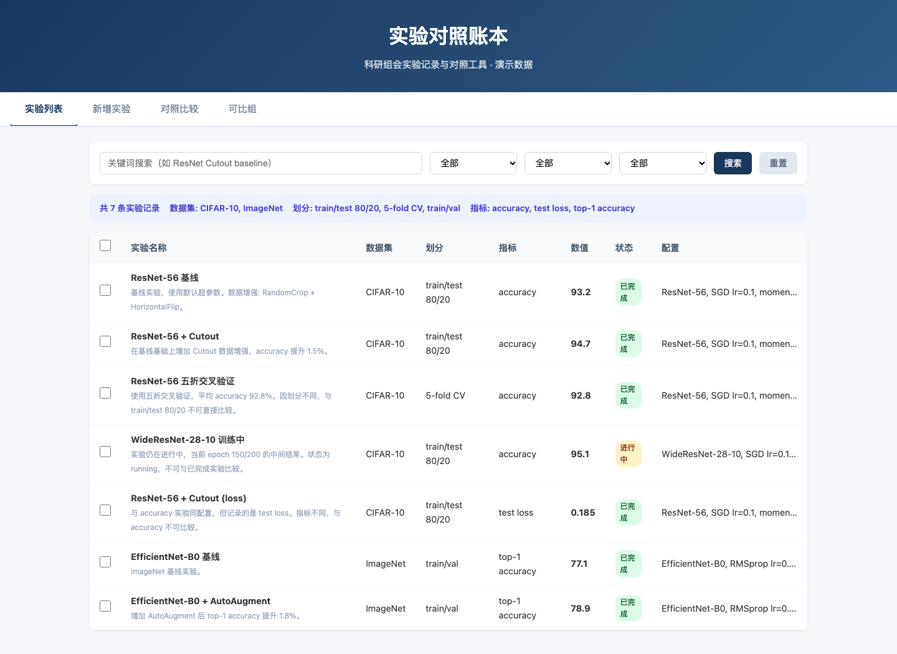

项目简介
实验对照账本是一个面向科研组会的实验记录与对照工具，用于管理不同数据集、划分和评价指标的实验。 系统使用 seekdb 1.4.0 真实数据库存储实验记录，支持关键词全文检索和字段筛选， 并能自动判断实验的可比性，对可比较的记录计算差值。
核心功能
- 实验记录管理: 录入实验名称、数据集、划分、指标、数值、配置说明和状态
- 全文搜索: 英文使用 seekdb 全文索引，中文使用 seekdb 子串查询
- 字段筛选: 按数据集、划分、指标精确筛选
- 可比性判断: 只在数据集、划分和指标都相同且状态为已完成时计算差值
- 对照比较: 选择多条记录并排查看，自动判断可比性并计算差异
- 数据持久化: 使用 seekdb 嵌入式数据库，重启后数据不丢失
真实运行截图

实验对照账本在本地浏览器中的运行界面
上图展示了应用的真实运行界面。用户可以在搜索框中输入关键词（如 "ResNet"、"Cutout"）， 系统使用 seekdb 的全文索引快速检索匹配的实验记录。同时可以通过下拉菜单按数据集、划分、指标进行筛选。
可比性对照示例
示例 1: 同划分可比较记录
CIFAR-10 / train/test 80/20 / accuracy
| 实验名称 | 数值 | 配置 |
|---|---|---|
| ResNet-56 基线 | 93.2% | SGD lr=0.1, epochs=200 |
| ResNet-56 + Cutout | 94.7% | SGD lr=0.1, epochs=200, Cutout(16px) |
可比性判断: ✓ 可比较（数据集、划分、指标均相同，状态均为 completed）
差值计算: +1.50 (提升 1.61%)
结论: 在基线基础上增加 Cutout 数据增强后，accuracy 提升 1.5 个百分点。
示例 2: 不同划分不可比较
⚠️ 不可比较
| 实验名称 | 划分 | 数值 |
|---|---|---|
| ResNet-56 基线 | train/test 80/20 | 93.2% |
| ResNet-56 五折交叉验证 | 5-fold CV | 92.8% |
不可比较原因:
- 划分不同: "train/test 80/20" vs "5-fold CV"
虽然两个实验都在 CIFAR-10 数据集上测量 accuracy，但由于数据划分方式不同， 实验结果受到不同的训练/验证集分布影响，因此不可直接比较。
示例 3: 状态不同不可比较
⚠️ 不可比较
| 实验名称 | 状态 | 数值 |
|---|---|---|
| ResNet-56 基线 | completed | 93.2% |
| WideResNet-28-10 训练中 | running | 95.1% |
不可比较原因:
- 实验 "WideResNet-28-10 训练中" 状态为 "running"，非已完成
虽然两个实验的数据集、划分、指标都相同，但第二个实验仍在进行中， 当前数值是中间结果（epoch 150/200），最终结果可能变化，因此不可比较。
验证步骤
1. 安装依赖
cd qoder
npm ci2. 初始化演示数据
npm run seed这将创建 7 条虚构的实验记录，包括可比较组和不可比较的记录。
3. 运行测试
npm test本地验证
seekdb version: 5.7.25-OceanBase seekdb-v1.4.0.0
=== Results: 44 passed, 0 failed ===4. 启动应用
npm start应用将在 http://127.0.0.1:3000 启动。
5. 浏览器验证
- 打开
http://127.0.0.1:3000 - 在"实验列表"标签页查看所有记录
- 使用搜索框搜索关键词（如 "ResNet"）
- 使用下拉菜单按数据集、划分筛选
- 切换到"对照比较"标签页，选择多条记录进行比较
- 查看"可比组"标签页，了解自动分组结果
6. API 验证
# 查看 seekdb 版本
curl http://127.0.0.1:3000/api/version
# 搜索实验
curl "http://127.0.0.1:3000/api/experiments?q=ResNet"
# 筛选实验
curl "http://127.0.0.1:3000/api/experiments?dataset=CIFAR-10&split=train%2Ftest%2080%2F20"
# 获取分组
curl http://127.0.0.1:3000/api/groups技术架构
核心技术栈
- Node.js 22+: 纯原生 HTTP 服务器，无框架依赖
- seekdb 1.4.0: 真实嵌入式数据库，支持 SQL 查询和全文索引
- 前端: 原生 HTML/CSS/JavaScript，无框架
seekdb 集成
项目使用 seekdb npm 包（版本 1.4.0）的 SeekdbClient 类进行数据库操作。
所有实验记录存储在 SQL 表中，筛选字段（dataset、split、metric、status）作为独立列，
支持高效的字段筛选。
关键词搜索使用 seekdb 的 FULLTEXT 索引和 MATCH ... AGAINST 语法，
采用 space 分词器进行基本的 tokenization，支持中英文混合搜索。
项目结构
qoder/
├── package.json # 项目配置（含 seekdb 1.4.0 依赖）
├── .npmrc # npm 配置（legacy-peer-deps=true）
├── README.md # 项目文档
├── DEPLOY.md # 部署指南
├── site/
│ └── index.html # 本展示页面
├── src/
│ ├── server.js # HTTP 服务器（async/await）
│ ├── seekdb.js # seekdb 数据库封装
│ ├── compare.js # 可比性判断逻辑
│ ├── seed.js # 示例数据填充
│ └── blackbox-test.js # 黑盒测试
└── public/
├── index.html # 前端页面
├── style.css # 样式
└── app.js # 前端逻辑作品仓库
本项目代码托管在 GitHub，参赛分支为：
Qoder 开发会话摘录 · 分支路径 competition/qoder-experiment-ledger-20261107/qoder

本地运行指南
快速开始
# 克隆仓库
git clone --branch competition/qoder-experiment-ledger-20261107 https://github.com/SimonAN01/oceanbase-2026-powercontext.git
cd oceanbase-2026-powercontext/qoder
# 安装依赖
npm ci
# 初始化演示数据
npm run seed
# 启动应用
npm start
# 访问 http://127.0.0.1:3000运行测试
# 单元测试（使用临时数据库）
npm test